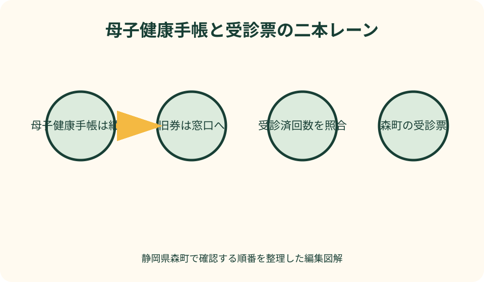
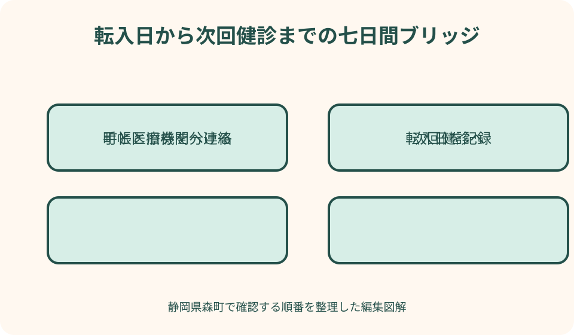

妊娠・子育て手続｜最終確認 2026-08-10
静岡県森町へ妊娠中に転入｜母子健康手帳と妊婦健診受診票の切替チェックリスト
妊娠中の転入では、これまでの記録を残す母子健康手帳と、住所地の自治体が交付する妊婦健康診査受診票を別々に扱います。手帳は同じものを持ち続け、前住所地の未使用受診票は森町の窓口へ持参して、受診済みの回数や検査票の種類に合わせた交付を相談します。転入日と次回健診が近いほど、役場の住所手続、健康こども課、医療機関への連絡を一つの予定表に置くことが大切です。

編集イラスト最初に結論：手帳は継続、受診票は森町で確認する
妊娠中に森町へ転入するとき、母子健康手帳と妊婦健康診査受診票は同じ冊子のように見えても役割が違います。母子健康手帳は妊娠、出産、乳幼児期の健康記録を一貫して残すものなので、転出元で交付された手帳を引き続き使います。
厚生労働省の取扱要領は、転入先市町村が転入者を交付台帳へ登録し、母子健康手帳の居住地を現住所へ訂正する扱いを示しています。利用者が自己判断で書き直すのではなく、森町の担当者へ現物を見せて案内を受けるのが確実です。
受診票は自治体による公費負担の書類です。前住所地の未使用券を予約日にそのまま出すのではなく、森町へ転入した日、最後に受けた健診、手元に残る券を健康こども課へ伝え、森町で使う券の交付を確認します。
この三点を一文でまとめるなら、『記録は同じ手帳でつなぎ、公費負担の券は住所変更に合わせてつなぎ直す』です。引っ越し荷物の奥へ入れず、手帳、受診票、診察券、次回予約票は一つの手提げに分けておきます。
転入前に一袋へまとめる書類
転居前は、母子健康手帳、前住所地から交付された妊婦健診受診票の残り全部、受診先の診察券、次回予約が分かる物を一袋へまとめます。券は通常分だけでなく、超音波、血液検査、産婦健診など名称の異なる物も残します。
すでに受診した健診の領収書と明細、検査結果、紹介状がある場合は、未使用券と混ざらないよう仕切ります。領収書は県外・里帰り受診の費用助成を相談するときに必要になる可能性があるため、金額だけを写真に撮って原本を処分しないでください。
多胎妊娠で追加券が交付されている場合は、一般の券と追加券を分け、どちらを何回使ったかをメモします。紙の残り枚数だけでは、森町の交付順や検査の対応関係を正確に照合できないためです。
正確な持ち物は事情によって変わります。本人確認書類、マイナンバーが分かる物、転入手続に関する書類も持参候補に加え、来庁前に健康こども課こども家庭係へ電話して不足がないか確認します。
転入日と次回健診日を最初に並べる
最初にカレンダーへ書くのは、引っ越し作業日ではなく森町への転入日と次回健診日です。公費負担の取扱いは受診時の住所地と関係するため、住民登録が変わる前後のどちらで受診するかを曖昧にしません。
次回健診が転入直後なら、転出元にも森町にも早めに相談します。前自治体の券を使えると思い込んだまま受診当日を迎えず、医療機関へも『森町へ何日に転入する予定』と伝えて受付方法を尋ねます。
転入日より前に受けた健診は前住所地、転入後に受ける健診は森町へ確認する、という日付の境目を記録します。ただし実際の助成対象や請求方法は自治体間の取扱いによるため、この記事だけで費用負担を断定しません。
転居手続が遅れそうでも、必要な診療や健診を事務上の都合だけで延期しないでください。体調や受診時期は医療機関へ相談し、受診票が間に合わない場合の支払方法と後の確認手順を町と医療機関の双方へ尋ねます。
森町の窓口と受付時間
相談先は森町保健福祉センター一階の健康こども課こども家庭係です。所在地は静岡県周智郡森町森50番地の1、電話番号は0538-86-6330と町公式に掲載されています。
森町公式の母子健康手帳交付案内は、土日祝日と年末年始を除く平日の午前8時30分から午後4時30分までを示しています。転入者の受診票手続も同じ時間で対応できるか、来庁日には最新情報を確認します。
妊娠届の新規提出と、転入に伴う受診票の交付は事情が異なります。予約の要否、本人の来庁が難しい場合の対応、必要書類、所要時間を電話で伝え、窓口へ行けば必ず一度で終わるとは考えないようにします。
森町の申請書には、交付または再交付理由として『転入』を選ぶ欄と、所持する母子健康手帳を交付した市区町村名を書く欄があります。手帳を持参して転出元を正確に伝える準備ができます。
母子健康手帳は記録を切らずに持ち続ける
母子健康手帳には、これまでの健診結果、検査、妊娠経過、本人が記入した体調などが積み重なっています。転居のたびに別冊へすると経過をたどりにくくなるため、同じ手帳を新しい医療機関にも提示します。
国の取扱要領では、受診券や予防接種問診票などを手帳へとじ込まない考え方も示されています。つまり、母子健康手帳が継続することと、自治体ごとの券が切り替わることは矛盾しません。
住所欄の訂正方法は森町の窓口で確認します。古い住所を消して読めなくしたり、健診記録の余白へ新住所を書き込んだりせず、担当者が後から経過を追える状態を保ちます。
紛失や著しい破損がある場合は転入とは別の相談になります。手帳が見当たらなくても自己流で新しい記録を作らず、森町と過去の医療機関へ再交付や記録確認の方法を相談してください。
受診済回数は紙の枚数ではなく履歴で合わせる
森町へ伝える受診済回数は、母子健康手帳の健診記録、領収書、前自治体の使用済控えを見比べて数えます。キャンセルした予約や券を使わない診察を、妊婦健診一回として足さないようにします。
森町の申請様式には、妊婦健康診査の初回から第16回まで、超音波検査、血液検査などを町側で記録する欄があります。この構成からも、単なる残枚数ではなく、どの種類を交付するか照合する必要が分かります。
転出元では第何回と呼んでいたか、森町の券で同じ番号になるかは窓口で確定します。自分で旧券と新券を一対一に対応させ、未受診の検査が残っていると判断しないでください。
相談メモには『最終受診日』『そのときの妊娠週数』『次回予約日』『使用した券名』『残る券名』を別々に書きます。分からない欄は空欄のまま示した方が、推測した数字より正確な照合につながります。

森町の妊婦健診受診票と検査票
森町公式は、母子健康手帳交付時に妊婦健康診査受診票16回分と超音波検査などの受診票を渡すと案内しています。転入者は、すでに受診した分を踏まえて何が交付されるか窓口で確認します。
受診票は、対象となる健診や妊娠週数、検査内容、公費負担の上限が同一とは限りません。未使用券が多く残っていても、すべてを今後自由な順番で使えるという意味ではありません。
国が示す妊婦健診の望ましい基準や検査項目は全国的な目安ですが、実際の検査は本人の状態、妊娠経過、医療機関の方針、医師等の判断で変わります。券の有無から受診の要否を自己判断しないようにします。
新しい券を受け取ったら、その場で氏名、住所、交付された回数と種類を確認します。旧券と混ざらないよう封筒を分け、医療機関には次に使う森町の券だけを分かりやすく提示します。
医療機関を変えない場合の連絡
住所だけ森町へ移し、同じ産科へ通い続ける場合も連絡は必要です。受付へ住所変更日、新しい住所、森町の受診票へ切り替わることを伝え、次回からどの券を提出するか確認します。
通院先が静岡県内でも、森町の券をその医療機関で直接扱えるかは医療機関と町へ尋ねます。以前の自治体で使えたという事実だけで、森町でも同じ支払方法になるとは断定できません。
診療録は同じ医療機関に残りますが、受付登録、請求先、郵送物の住所は自動で変わらないことがあります。診察券の登録住所、緊急連絡先、保険資格の変更も窓口で更新します。
健診日には母子健康手帳、森町から交付された該当券、医療機関が指定する物を持参します。旧券も確認用に求められる可能性があるため、処分時期は森町の案内に従います。
医療機関も変える場合の引継ぎ
転居に合わせて産科も変えるなら、新しい医療機関の予約を先に確保し、受入条件を確認します。分娩を希望する場合は、健診だけの受入れとは条件が異なることがあるため、出産予定日も伝えます。
紹介状、検査結果、画像データなどの引継ぎ資料が必要かは、旧医療機関と新医療機関の双方へ尋ねます。紹介状が必ず必要、または不要と一律に決めず、予約時の指示に従います。
母子健康手帳は本人が携帯する連続記録ですが、すべての診療情報が手帳だけに記載されているわけではありません。健診記録があるから医療機関間の情報提供は不要だと判断しないようにします。
新しい産科へは、最終受診日、次回健診の目安、服用中の薬、アレルギー、医師から伝えられている注意事項を正確に共有します。薬を中止・変更する判断は自分で行わず、担当医や薬剤師へ確認します。
県外受診・里帰り出産を予定している場合
森町へ転入した後も県外の医療機関へ通う、または里帰り出産をする場合は、受診前に健康こども課へ相談します。静岡県が委託契約していない医療機関や助産所では、森町の券を窓口で直接使えない場合があります。
森町公式は、契約外の医療機関等で妊産婦健診を受け、受診票を利用できなかった場合に費用の一部を助成する案内を掲載しています。いったん支払う可能性、助成上限、対象項目を事前に確かめます。
申請時の持ち物として、町は母子健康手帳、未使用の受診票、領収書、振込先が分かる物、印鑑を案内しています。領収書はレシートではなく原本が必要とされるため、医療機関名や受診内容が分かる書類も一緒に保管します。
町の案内では申請期限を出産日の属する月から一年以内としていますが、対象となる健診や最新の必要書類は個別に確認します。転入前の受診分まで森町へまとめて請求できるとは考えず、受診日の住所地ごとに相談先を分けます。
多胎妊娠の追加受診票
森町公式は、多胎妊婦へ妊婦健康診査受診票を追加で5回分交付すると案内しています。転入前に追加券を使っている場合は、その使用回数も一般券とは別に伝えます。
森町では追加5回分を一般の14回分を使った後、15回目から使う案内があります。一方、受診時期は受診票記載の推奨週数より早く使えるとされており、交付と使用順を窓口と医療機関へ確認します。
転出元の追加回数や券の名称が森町と同じとは限りません。手元に追加券が残っていても、旧券を先に使い切るのではなく、森町で交付内容を照合してもらいます。
健診回数は妊娠経過に応じて医師等が判断します。追加券の枚数から受診回数を決めたり、券がなくなったことを理由に必要な受診を控えたりせず、費用面は町、受診面は医療機関へ相談します。
転入直後に受診日が来るときの橋渡し
転入から次回健診まで数日しかない場合は、『転入手続が終わってから考える』ではなく、転入前から森町と医療機関へ連絡します。いつ住所を移すか、予約日はいつか、旧券は何回まで使用済みかを同じ説明で伝えます。
森町の受診票交付が予約に間に合うか、間に合わない場合に受付でどう支払うか、後から助成対象になり得るかを確認します。医療機関の領収書と明細は結果が分かるまで保管します。
引っ越し作業、転入届、妊婦健診を一日に詰め込むと移動負担が大きくなります。家族に荷解きを任せる、窓口訪問者を分ける、送迎を確保するなど、本人の体調を優先した予定にします。
腹痛、出血、破水感など気になる症状がある場合は、この一般的な事務手順より医療機関への相談を優先します。症状の意味や緊急性を記事から自己判断せず、かかりつけ医療機関等の指示を受けてください。

妊婦のための支援給付と面談も別に確認する
受診票の切替と、妊婦のための支援給付は別の手続です。転出元で申請や受給をした時期、現在の認定状況を伝え、森町で残る申請や面談があるか健康こども課へ確認します。
森町は妊娠時と出産後の二回に分けた妊婦支援給付金と、妊婦等包括相談支援事業を一体的に実施すると案内しています。転入しただけで同じ給付を重ねて受け取れるという意味ではありません。
転出元の通知、申請控え、振込履歴があれば持参候補にします。口座情報や個人番号を家族の共有チャットへ載せず、窓口へ提出する資料と家族用の予定表を分けて管理します。
相談面談では、次回健診、出産予定施設、里帰り、移動手段、頼れる家族の有無を伝えると、必要な支援につながりやすくなります。支援の対象可否は、森町が個別状況を確認した上で判断します。
森町こども家庭センターを相談の入口にする
森町こども家庭センターは、妊産婦、子育て世帯、18歳までの子どもに関する相談を一体的に受ける町の窓口です。受診票だけでなく、転居後の生活や産後の見通しも相談できます。
転入後の住まいが山間部で通院時間が長い、車を運転できない、家族の送迎が安定しないといった事情は、制度の質問とは分けて具体的に伝えます。困り事を小さく見せる必要はありません。
出産施設まで遠い場合、森町には遠方の分娩取扱施設等への交通費・宿泊費支援の案内もあります。距離や医師の判断など条件があるため、対象と思われる場合は利用前に町へ相談します。
相談記録には、担当部署、確認日、答え、次の連絡先を書きます。個人名を外部へ公開する必要はありませんが、家族内で引き継げる程度の記録があると、本人が休む日に連絡を代われます。
窓口へ持参する転入チェックリスト
第一群は、継続する記録です。母子健康手帳、直近の健診結果、服薬情報、紹介状や検査資料があれば一緒にします。母子健康手帳は旧住所地の物だから不要、とは判断しません。
第二群は、差し替えを相談する券です。前自治体の未使用受診票、超音波等の検査票、多胎の追加券、産婦健診や新生児聴覚検査の券があれば、種類ごとに束ねます。
第三群は、日付と回数の記録です。森町への転入日、最終健診日、受診済回数、次回予約日、出産予定日、県外受診や里帰りの期間を一枚に書きます。
第四群は、本人確認等の資料です。本人確認書類、マイナンバーが分かる物、転入関係書類など、健康こども課から案内された物を準備します。代理来庁の可否や追加資料は必ず事前に確認してください。
よくある取り違えを避ける
最も大きな取り違えは、母子健康手帳が使えるなら旧自治体の受診票も使えると思うことです。手帳は長期の健康記録、受診票は自治体の公費負担書類なので、別々に確認します。
次に多いのは、残った紙の数だけを伝えることです。一般健診、超音波、血液検査、多胎追加など種類があるため、使用済回数と券名をセットで示します。
三つ目は、転入日ではなく引っ越し便の日を基準にすることです。住民登録上の転入日と受診日の関係を町へ伝え、どちらの自治体へ相談する健診かを確認します。
四つ目は、県外の医療機関でも窓口で森町の券を必ず使えると思うことです。委託契約の有無によって支払方法が変わり得るため、受診前の確認と領収書原本の保管を忘れないようにします。
妊娠中に転入する手続の良い点
良い点は、転入時に健診履歴を一度整理すると、本人、家族、町、医療機関が次回の予定を共有しやすくなることです。単なる住所変更ではなく、記録の棚卸しの機会になります。
母子健康手帳を継続して使えば、転居前後の妊娠経過を一冊でたどれます。新しい医療機関で説明するときも、受診日や検査の記憶だけに頼らず記録を示せます。
受診済回数と未使用券を町で照合すれば、旧券と新券の重複使用や、必要な検査票を取り違える可能性を小さくできます。分からない項目を窓口で空欄のまま質問できるのも利点です。
森町こども家庭センターへつながることで、健診費用だけでなく、里帰り、通院交通、産後の生活、家族の支援体制も相談できます。制度名が分からない段階でも、困り事から話し始められます。
町の案内へ注文したい点
注文したい点は、町の妊婦健診ページに県外受診や多胎の説明はある一方、転入者が何をどの順で持参するかを一画面で追いにくいことです。転入専用のチェックリストがあると、予約直前の迷いを減らせます。
申請書には転入欄と交付する受診票の詳細な欄がありますが、PDFを開かないと構造が分かりません。本文から『手帳は継続、券は残りを照合』という要点へ直接たどれる案内が望まれます。
県外受診では、委託契約の確認方法、受診前の連絡先、領収書の記載要件を、転入者にも分かる例で示してほしいところです。出産後の助成申請だけでなく、転入直後の一時支払の相談例も役立ちます。
多胎の追加券は町の通常ルールが示されていますが、転入前に追加券を使用した家庭の照合例もあると安心です。公開情報だけで決めず、現在は個別に健康こども課へ確認するのが適切です。
予定どおり進まないときの代案・結論
代案・結論として、未使用券を見つけられなくても町への相談を先延ばしにしません。母子健康手帳と受診履歴を持参し、紛失した物、最後に使った券、次回予約を正直に伝えて案内を受けます。
本人が窓口へ行けない場合は、家族の代理、別日、必要書類の事前提出など可能な方法を問い合わせます。代理人が手帳や個人情報を持ち運ぶため、委任や本人確認の条件、返却方法まで確認します。
旧医療機関から紹介状が間に合わない場合は、新医療機関へ事情を伝え、予約を維持できるか、先に用意できる情報は何かを尋ねます。医療情報が不足した状態で受診可否を自分だけで決めません。
受診票の交付が健診日に間に合わない場合は、町と医療機関へ支払方法を確認し、領収書と明細を保管します。助成されると先に決めつけず、どの手続が可能かを受診日、住所地、医療機関ごとに確かめます。
大石の視点：引っ越し箱より先に健診の橋を架ける
大石の視点では、妊娠中の転入は役場の届出だけで完了する引っ越しではありません。住まいが変わる日と、健診を続ける日を切れ目なくつなげる生活設計です。
森町は町なかと北部の山間地で、医療機関までの移動条件が異なります。物件を選ぶ段階から、産科までの所要時間、家族の送迎、悪天候時の経路、産後の相談先を地図へ置く意味があります。
不動産の鍵渡し日だけで日程を決めると、転入届、受診票交付、健診予約が同じ週へ集中します。契約と引っ越しの予定表に、本人が休める日と役場へ行く人を先に確保します。
家族の共有紙には、住所や契約情報を詰め込みすぎず、『手帳は本人』『旧券は窓口用封筒』『次回健診は何日』『町への確認担当は誰』の四点を書けば、迷ったときの判断軸になります。
図解案1：手帳と受診票の二本レーン
一つ目の図解は、転出元から森町までを二本の線で描きます。上段の緑線は母子健康手帳がそのまま続き、健診記録、出産記録、乳幼児期へ伸びます。
下段の橙線は旧自治体の受診票が森町の窓口で止まり、受診済回数と券種を照合して森町の券へつながります。旧券を直接医療機関へ持ち込む線には確認マークを置きます。
二本の線が交わる地点には、転入日、最終健診日、次回予約日を記載します。日付が三つあると、どの自治体へ尋ねる受診かを視覚的に整理できます。
多胎追加券と県外受診は下段から分岐させます。多胎は使用済み追加回数、県外は委託契約と領収書という別の確認札を付け、通常券と混ぜない構成にします。
図解案2：転入日から次回健診までの七日間ブリッジ
二つ目の図解は、転入前、転入日、転入翌日以降、次回健診の四場面を橋のように並べます。転入前には手帳、旧券、使用済回数、予約票を集めます。
転入日には住民登録の手続を行い、健康こども課へ行く順番を確認します。同日対応が難しい場合も、受診日までの連絡予定をその場で決めます。
転入翌日以降は森町で券を照合し、医療機関へ住所と券の変更を連絡します。医療機関も変わるなら、紹介状と予約の確認を並行して置きます。
橋の終点である次回健診には、母子健康手帳、該当する森町の券、医療機関指定の持ち物を配置します。県外受診の分岐には、事前相談、支払、領収書保管、後日の申請確認を描きます。
当日用の短い質問集
窓口では『母子健康手帳はこのまま使い、住所欄はどのように直しますか』と尋ねます。手帳の継続と住所訂正を一つの質問にすると、再交付の相談と混同しにくくなります。
次に『最終健診は何月何日で、通常券を何回、超音波券を何回使いました。森町から交付される券を一緒に確認できますか』と、分かる範囲を具体的に伝えます。
県外予定がある場合は『何県のどの医療機関へ何月から通います。森町の券を直接使えるか、使えない場合に保管する書類は何ですか』と受診前に確認します。
多胎の場合は『前自治体の追加券を何回使いました。森町の追加5回分との関係と使用順を確認したいです』と伝えます。回答、確認日、次に連絡する医療機関をメモします。
まとめ：今日することは三つ
一つ目は、母子健康手帳と前自治体の受診票を同じ場所から取り出し、手帳は継続、券は切替相談と付箋を分けることです。旧券を処分したり、次回用と決めて切り離したりしません。
二つ目は、転入日、最終健診日、次回健診日を一枚へ書き、通常健診、超音波等、多胎追加の使用済回数を種類別に数えることです。分からない箇所は窓口で確認する欄にします。
三つ目は、森町健康こども課こども家庭係と医療機関へ連絡し、必要書類、受診票の交付、県外受診の取扱いを確かめることです。公式ページの閲覧日も記録します。
この記事は2026年8月10日に一次情報を確認して作成しました。医療上の受診時期や検査内容は担当医等へ、助成や交付の個別判断は森町へ相談し、実行前に最新の公式案内を確認してください。
公式情報・確認先
掲載内容は次の一次情報を基礎に整理しました。営業、料金、催し、交通は変わるため、出発前または手続き前にリンク先で最新情報を確認してください。
- 妊娠したら（母子健康手帳の交付）（静岡県森町、2026-08-10確認）
- 妊産婦の健診案内（静岡県森町、2026-08-10確認）
- 妊娠届出書（兼）妊婦健康診査等受診票交付申請書（静岡県森町、2026-08-10確認）
- 森町こども家庭センター（静岡県森町、2026-08-10確認）
- 遠方の分娩取扱施設等への交通費及び宿泊費支援（静岡県森町、2026-08-10確認）
- 妊婦のための支援給付（静岡県森町、2026-08-10確認）
- 母子健康手帳の作成及び取扱い要領について（厚生労働省、2026-08-10確認）
- 妊婦に対する健康診査についての望ましい基準（厚生労働省、2026-08-10確認）
- 妊娠をとおして使える制度・サービス（厚生労働省 出産なび、2026-08-10確認）